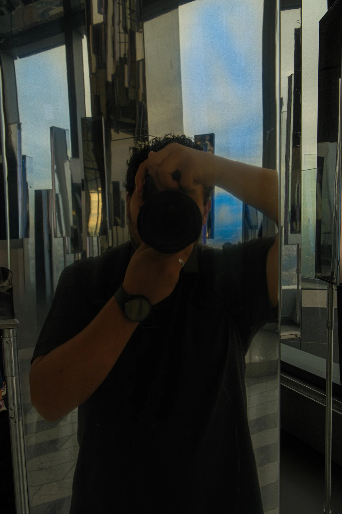

The living world,
filed by hand.
A personal field guide to the wildlife of Costa Rica. Every plate carries the natural-history record of its subject and the camera settings that brought it home.
1 plate · 1 species1 family · one small country
Collection
Nothing filed under that yet.
Try a broader word, or clear the filters.

About me
I photograph the animals, plants and landscapes I meet, mostly in the forests and coasts of Costa Rica. Each plate is filed like a specimen sheet: what the subject is, where it lives, and how the frame was made.